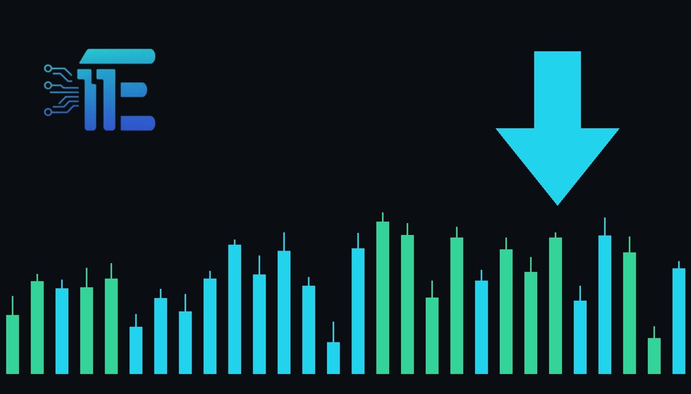

Gold Slips Below $4,000 Amid Mounting Middle East Concernsមាសធ្លាក់ចុះក្រោម 4,000 ដុល្លារ ខណៈបារម្ភពីមជ្ឈិមបូព៌ាកើនឡើង
XAU/USD impact: ▼ Bearishផលប៉ះពាល់លើ XAU/USD: ▼ ធ្លាក់

Spot gold declined in early trading as precious metals fell despite rising regional tensions. Traders monitor how geopolitical developments interact with shifting metal valuations.
តម្លៃមាសបានធ្លាក់ចុះក្នុងអំឡុងពេលជួញដូរព្រឹកព្រលឹមទោះបីជាមានភាពតានតឹងក្នុងតំបន់ក៏ដោយ។ អ្នកជួញដូរតាមដានពីរបៀបដែលកត្តាភូមិសាស្ត្រនយោបាយប៉ះពាល់ដល់តម្លៃមាស។
Spot gold opened at $4,033.60 per troy ounce on Friday, October 30, 2026, marking a slight 0.1% increase from the previous session's close. However, prices quickly reversed course during early trading hours, sliding to $3,986.20 per troy ounce. This downward movement occurred even as concerns regarding the Middle East mounted, highlighting a divergence between traditional safe-haven catalysts and actual market pricing.
តម្លៃមាសបានបើកក្នុងតម្លៃ 4,033.60 ដុល្លារក្នុងមួយអន់ស៍ក្នុងថ្ងៃសុក្រ ទី30 ខែតុលា ឆ្នាំ2026 ដោយកើនឡើងបន្តិច 0.1% ពីការបិទវគ្គមុន។ ទោះយ៉ាងណាក៏ដោយ តម្លៃបានធ្លាក់ចុះមកនៅត្រឹម 3,986.20 ដុល្លារក្នុងមួយអន់ស៍ក្នុងអំឡុងពេលជួញដូរព្រឹកព្រលឹម។ ការផ្លាស់ប្តូរចុះក្រោមនេះបានកើតឡើង ទោះបីជាមានការព្រួយបារម្ភអំពីមជ្ឈិមបូព៌ាក៏ដោយ ដែលបង្ហាញពីភាពខុសគ្នារវាងកត្តាសុវត្ថិភាពបែបប្រពៃណី និងតម្លៃទីផ្សារជាក់ស្តែង។
The transmission channel to gold typically relies on safe-haven demand during periods of regional instability, as well as broader currency valuations and inflation hedging. Although geopolitical tensions in the Middle East usually provide a supportive floor for precious metals by boosting safe-haven appeal, selling pressure in the broader market overshadowed these risk factors, driving spot prices beneath the psychological $4,000 threshold.
ច្រកបញ្ជូនទៅកាន់មាសជាធម្មតាពឹងផ្អែកលើតម្រូវការទ្រព្យសុវត្ថិភាពក្នុងអំឡុងពេលមានអស្ថិរភាពក្នុងតំបន់ ក៏ដូចជាការវាយតម្លៃរូបិយប័ណ្ណទូលំទូលាយ និងការការពារអតិផរណា។ ទោះបីជាភាពតានតឹងផ្នែកភូមិសាស្ត្រនយោបាយក្នុងមជ្ឈិមបូព៌ាជាធម្មតាផ្តល់ការគាំទ្រដល់លោហៈមានតម្លៃក៏ដោយ សម្ពាធនៃការលក់នៅក្នុងទីផ្សារទូលំទូលាយបានគ្របដណ្តប់លើកត្តាហានិភ័យទាំងនេះ ដោយជំរុញឱ្យតម្លៃធ្លាក់ចុះក្រោមខ្សែកោងចិត្តសាស្ត្រ 4,000 ដុល្លារ។
A balanced view of the current market suggests that ongoing geopolitical friction and potential supply disruptions can support gold if investors rush to secure safe assets. Conversely, persistent selling pressure, strengthening alternative assets, or shifting macroeconomic conditions can continue to pressure the metal lower, challenging its traditional role as a safe-haven destination during times of volatility.
ទស្សនៈមានតុល្យភាពនៃទីផ្សារបច្ចុប្បន្នបង្ហាញថា ការប៉ះទង្គិចផ្នែកភូមិសាស្ត្រនយោបាយដែលកំពុងបន្ត និងការរំខានដល់ការផ្គត់ផ្គង់អាចគាំទ្រដល់មាសប្រសិនបើអ្នកវិនិយោគប្រញាប់ប្រញាល់ធានាទ្រព្យសកម្មសុវត្ថិភាព។ ផ្ទុយទៅវិញ សម្ពាធលក់ជាប់លាប់ ឬការផ្លាស់ប្តូរលក្ខខណ្ឌម៉ាក្រូសេដ្ឋកិច្ចអាចបន្តដាក់សម្ពាធលើមាសឱ្យធ្លាក់ចុះបន្ថែមទៀត ដែលបង្កបញ្ហាប្រឈមដល់តួនាទីរបស់វាជាកន្លែងសុវត្ថិភាពក្នុងពេលមានភាពចលាចល។
Traders should closely monitor incoming geopolitical headlines from the Middle East, broader currency index fluctuations, and overall market sentiment toward precious metals. Observing whether spot prices can stabilize above key psychological levels or face extended downside momentum will be crucial for understanding near-term market direction.
អ្នកជួញដូរគួរតែតាមដានយ៉ាងដិតដល់នូវចំណងជើងព័ត៌មានភូមិសាស្ត្រនយោបាយពីមជ្ឈិមបូព៌ា ការប្រែប្រួលសន្ទស្សន៍រូបិយប័ណ្ណទូលំទូលាយ និងអារម្មណ៍ទីផ្សារទូទៅចំពោះលោហៈមានតម្លៃ។ ការសង្កេតមើលថាតើតម្លៃអាចមានលំនឹងលើសពីកម្រិតចិត្តសាស្ត្រសំខាន់ៗ ឬប្រឈមមុខនឹងសម្ពាធធ្លាក់ចុះបន្តទៀត គឺមានសារៈសំខាន់ណាស់សម្រាប់ការយល់ដឹងពីទិសដៅទីផ្សាររយៈពេលខ្លី។
Key takeawaysចំណុចសំខាន់ៗ
- Spot gold slipped below $4,000 per troy ounce during early trading.
- តម្លៃមាសបានធ្លាក់ចុះក្រោម 4,000 ដុល្លារក្នុងមួយអន់ស៍ក្នុងពេលជួញដូរព្រឹកព្រលឹម។
- Prices fell despite mounting concerns and tensions in the Middle East.
- តម្លៃបានធ្លាក់ចុះទោះបីជាមានការព្រួយបារម្ភ និងភាពតានតឹងនៅក្នុងមជ្ឈិមបូព៌ាក៏ដោយ។
- Traders are watching geopolitical developments and key psychological price levels.
- អ្នកជួញដូរកំពុងតាមដានការវិវត្តផ្នែកភូមិសាស្ត្រនយោបាយ និងកម្រិតតម្លៃចិត្តសាស្ត្រសំខាន់ៗ។
Original commentary by THE MARKET CODE, based on public reporting from Yahoo! Finance: GC=F News. Written with the help of AI. Educational only, not financial advice.
មតិវិភាគដើមដោយ THE MARKET CODE ផ្អែកលើការរាយការណ៍សាធារណៈពី Yahoo! Finance: GC=F News។ សរសេរដោយមានជំនួយពី AI។ មាតិកាអប់រំប៉ុណ្ណោះ មិនមែនជាដំបូន្មានហិរញ្ញវត្ថុទេ។